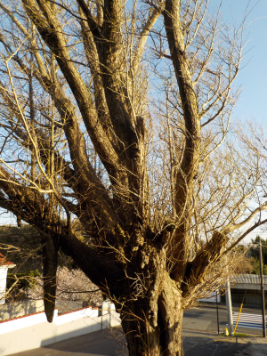
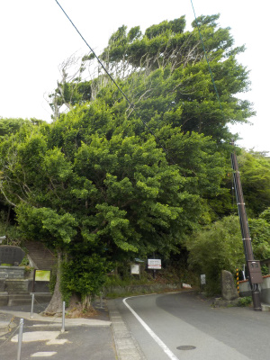
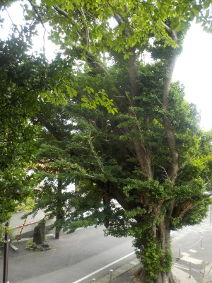
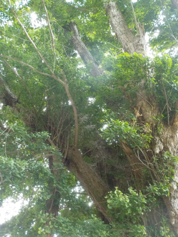
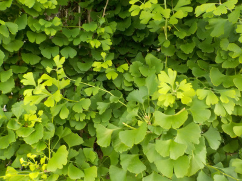
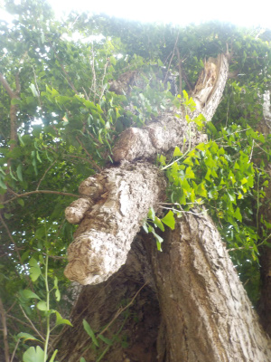

乳房イチョウにはまだ葉がありません。
更新日 : 2023/03/28

暖かくなって桜が咲いていますが、イチョウからはまだ新芽が出ていませんでした。
島根県出雲市大社町杵築北
更新日 : 2023/03/28

暖かくなって桜が咲いていますが、イチョウからはまだ新芽が出ていませんでした。
更新日 : 2022/06/12

海からの風が強いみたいで木が斜めになってますね。
紅葉した時はどうなるんだろう？強風で散っちゃうのかな？

反対側からの写真です。
くぼんだところが目と口に見えて、枝が手に見えなくもない。

アップで見ると更に複雑な樹形です。
巨木は見てて楽しいです。写真を撮るのも楽しい。

葉っぱです。

乳房イチョウは枝の下に乳房みたいなコブっぽいものが出来るようです。
この木にも数か所大きな乳房がありました。
出雲大社と稲佐の浜の間にあるので、そっちの観光のついでに見られてもいいんじゃないかと思います。
紅葉見たいですね。晴天の日にも見たいです。また見に行こうと思ってます。